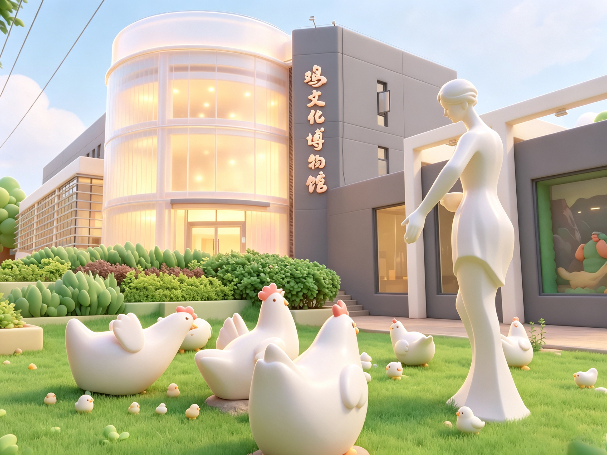
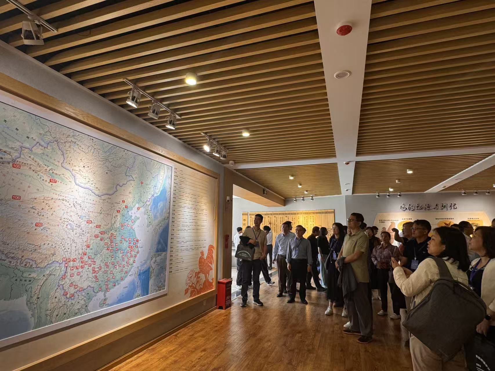
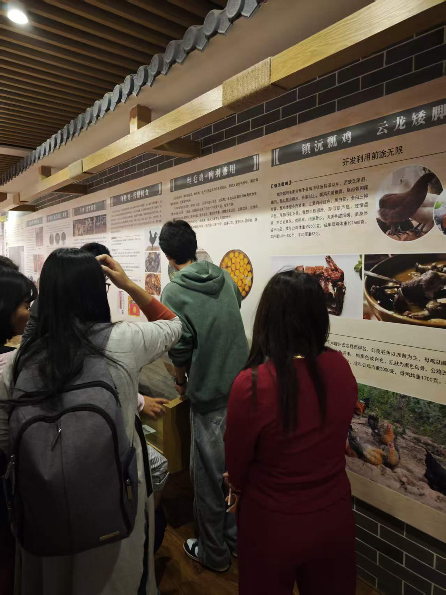
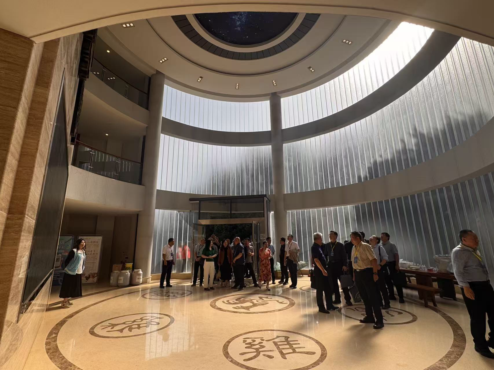
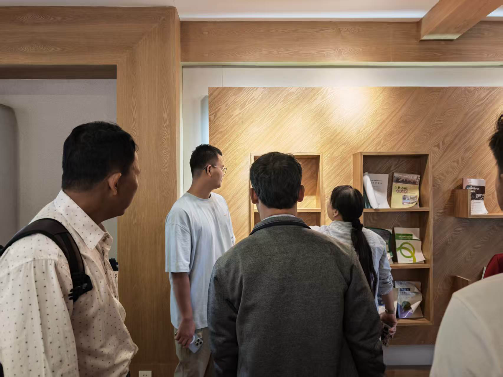
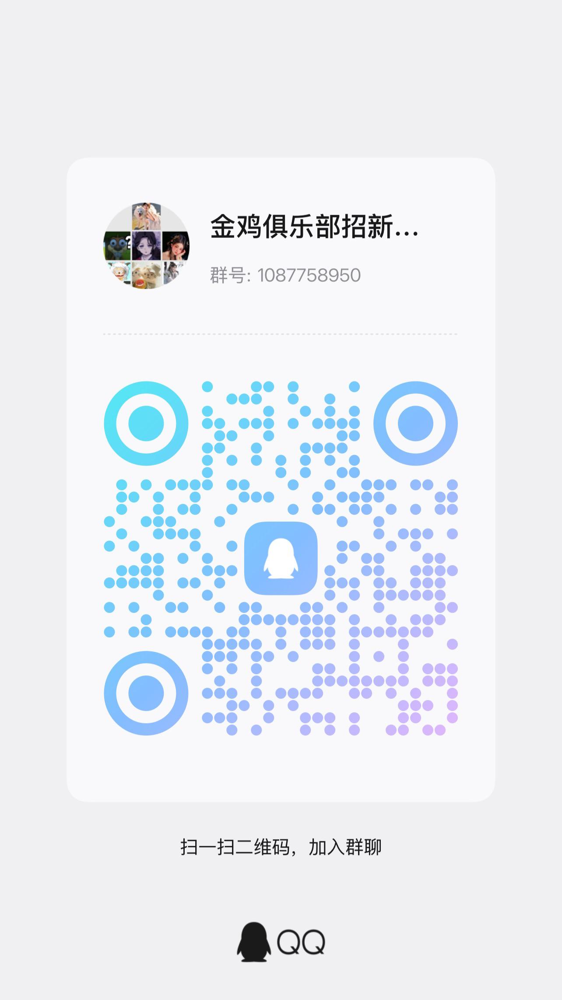

01 / 社团简介
从课堂走向
家禽全产业链
金鸡俱乐部成立于 2018 年 6 月 4 日，是云南农业大学由学生自愿组建的非营利鸡产业文化交流综合社团，面向动科、动医、食品专业师生开放。
社团秉持以专业技能培育学生、服务广大会员的核心宗旨，聚焦家鸡养殖、加工全产业链搭建学习交流平台，定向为家禽行业输送复合型专业人才。
社团依托校内专业教师提供科研与技术指导，成员覆盖本科、硕士、博士多层次学子，交流氛围多元；同时联动北京峪口、新广农牧、正大等行业龙头企业，并获得云南省畜牧业协会、家禽业协会、饲料工业协会多方扶持，打通实践、就业渠道。
日常开展产业揭牌交流、行业研学、禽肉品鉴实训等特色活动，组织师生参与行业交流仪式、产业链实操品鉴，让理论结合产业实操。社团整合校企、行业协会资源，构建 “教学 - 实践 - 就业” 一体化培养模式，形成产学研协同育人特色。
未来俱乐部将持续深耕家禽全产业链教学实践，深化校企、行业协会合作，丰富实训活动，持续提升学生专业实操能力，助力更多学子深耕家禽产业，成长为行业专业技术人才。
02 / 产业方向
覆盖家禽产业
全链条实践
家鸡养殖
禽肉加工
品鉴实训
校企行业
揭牌交流
就业渠道
定向输送
03 / 部门组成
三部协同
保障社团运转
宣传部
负责俱乐部活动摄影、图文宣传、海报制作，运营宣传素材，记录揭牌、品鉴等活动，对外展示社团产业交流成果，扩大社团行业影响力。
办公部
统筹社团档案整理、人员信息登记、会议记录、物资管理，对接校企及协会文书对接，协调内部日常事务，保障社团运转有序。
接待部
负责来访企业、行业协会、参会师生的引导接待，活动现场人员统筹，揭牌、品鉴大会现场秩序维护，做好对外来访客对接服务。
04 / 精彩瞬间
揭牌交流
与产业品鉴


05 / 重点活动
走进鸡文化
博物馆研学
ACTIVITY 01
中国畜牧兽医学会动物病理学分会第十四次理事会鸡文化博物馆参观
- 时间
- 2026 年 5 月
- 地点
- 云南农业大学鸡文化博物馆
- 规模
- 理事会成员 75 人
中国畜牧兽医学会动物病理学分会第十四次理事会成员共 75 人赴鸡文化博物馆参观学习，通过专业讲解深入了解家禽文化与产业发展，促进学术交流与科普融合。

ACTIVITY 02
外语学院鸡文化博物馆常态观园学习
- 时间
- 2026 年 5 月
- 地点
- 云南农业大学鸡文化博物馆
- 规模
- 外语学院师生 25 人
外语学院师生共 25 人开展常态观园学习活动，走进鸡文化博物馆进行实地研学，通过参观了解家禽文化知识，拓展跨学科视野与文化认知。

